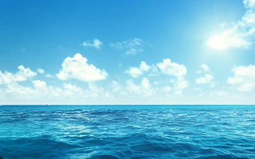
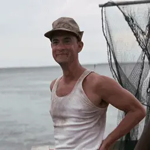

Breaking News:
Scientists have discovered a new deep-sea fish with bioluminescent fins off the coast of Australia. The unnamed species is believed to have unique traits that could contribute to future medical research and biotechnology.
Scientists have discovered a new deep-sea fish with bioluminescent fins off the coast of Australia. The unnamed species is believed to have unique traits that could contribute to future medical research and biotechnology.

Access the news by pressing the images
